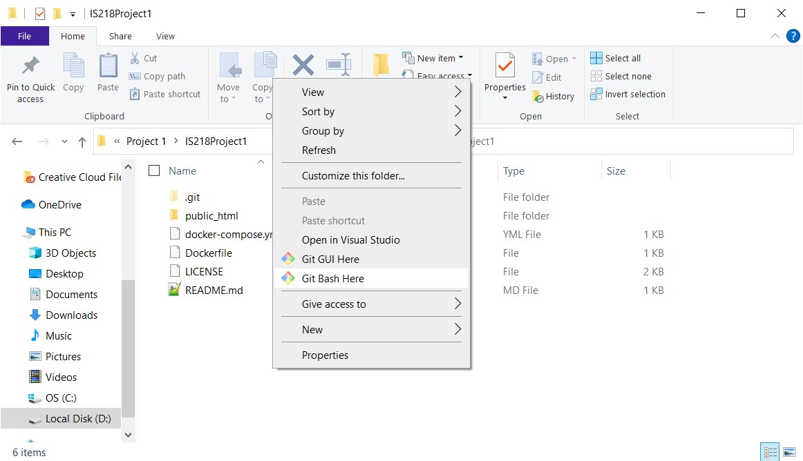
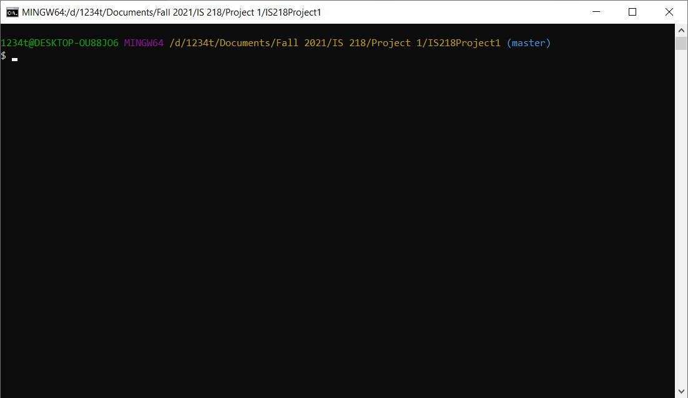
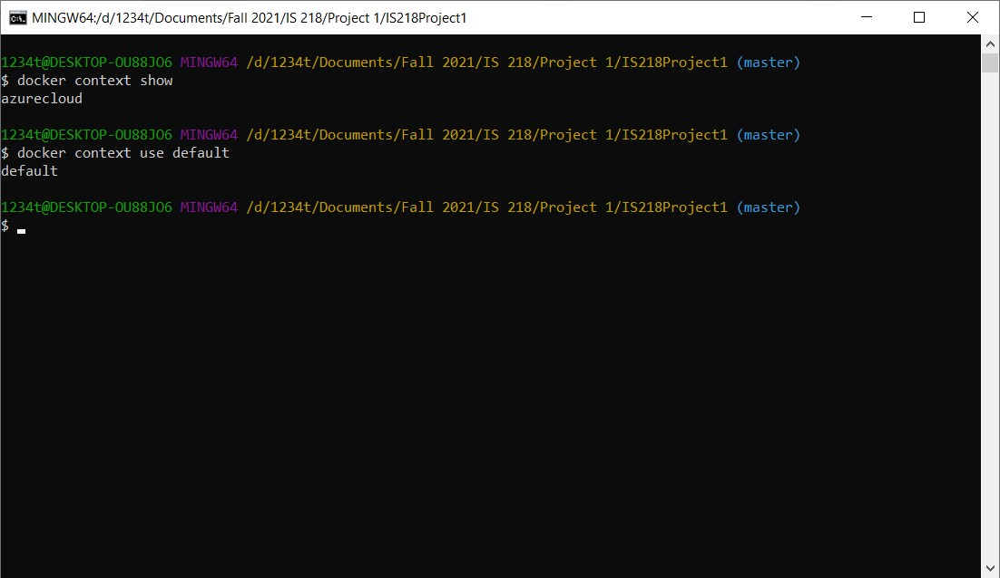
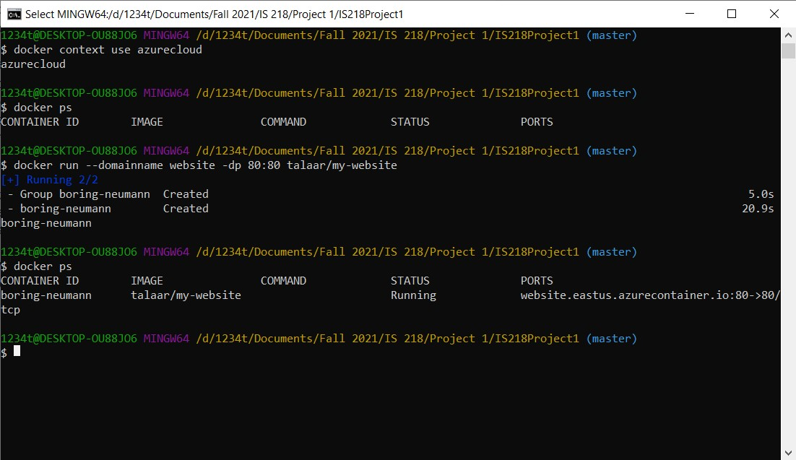

Tutorial on Hosting Docker App in Azure Cloud
1. Open the folder where your website is hosted locally in the File Explorer.
2. Right click in the folder and press “Git Bash Here”

Note: If you do not see this option, go to https://git-scm.com/downloads and download git to be able to see the git bash CLI.
After pressing “Git Bash Here”, a command line prompt should appear similar to the following:

3. Type docker context show and press enter to make sure you are in the default context. It should say ‘default’. If not, type docker context use default to switch to default.

4. Next, type docker build -t user-id/my-website . and press enter. In this case, “user-id” should be replaced with your user id on Docker Hub. Here, we use “my-website” as the name of the image for the purposes of this tutorial. This will build an image of your website.
Note: You cannot build images in the azure command line. Must be in the default docker context.
5. To test that your website image is built correctly locally, type docker run -dp 80:80 my-website and press enter. Then type in “localhost” in your browser to see the website.
6. Once you have checked that the image was built correctly, type docker push user-id/image-name:latest where user-id is your respective user id on Docker Hub and the image-name matches the name of the image you built.
7. Now we need to connect to Azure Cloud. Type the command docker login azure. This will open up a window in your browser asking you to log into your Azure Cloud account. Make sure to login with your account that has a subscription to the service.
8. Once logged in, type docker context create aci azureCloud. This will create a new azureCloud context.
Note: If you get the “no subscriptions found” message, make sure you are subscribed to the azure cloud service.
9. Next, switch to the new azureCloud context you just created by typing in docker context use azureCloud.
You can type docker context show to make sure you are in the right context.
10. Once you are in the azureCloud context, type in docker run --domainname website -dp 80:80 docker-id/image-name.
In this tutorial, image-name can be replaced with “my-website” while docker-id should be your docker id used to push your image to Docker Hub. Whatever is put after --domainname will become the name of the server hosting the website and will be part of the URL. This will run the website image from Docker Hub on Azure Cloud.
11. To see your website running on Azure Cloud, type docker ps. Copy and paste the URL listed under “Ports”. In this case, it would be website.eastus.azurecontainer.io.

12. Paste the URL into your browser to see your website/docker container hosted on Azure Cloud.
More information on how to deploy containers to Azure ACI using Docker CLI and Compose and be found at:
https://www.docker.com/blog/how-to-deploy-containers-to-azure-aci-using-docker-cli-and-compose/